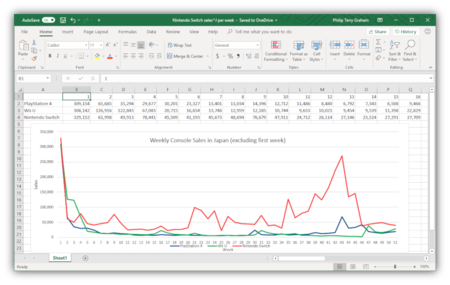

Le Monde Informatique
Microsoft Publisher
Les concurrents directs de Publisher, à l'exception de Adobe PageMaker, n'ont pas de filtre d'importation au format Publisher (extension .pub). Ceci signifie que les utilisateurs de Publisher doivent enregistrer leurs fichiers au format EMF ou PDF pour travailler en collaboration avec d'autres logiciels. LibreOffice, depuis sa version 4.01 (novembre 2013), permet d'ouvrir nativement les fichiers Publisher dans LibreOffice Draw. Depuis la version 1.5 de Scribus, sortie en fin mai 2015, il est maintenant possible d'ouvrir des fichiers Publisher. L'extension PubOOo pour importation sous Apache OpenOffice et OpenOffice.org, permet d'importer les fichiers Publisher vers Impress (logiciel de présentation). Elle ne peut pas fonctionner sans une installation de Publisher sur le poste.
| Disigned by |